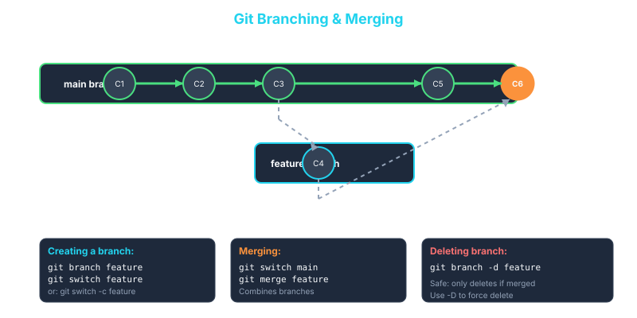

1. What is a Branch?
A branch is simply a lightweight movable pointer to a commit. That's it. There's no copying of files, no duplication of the project — just a pointer.
When you create a branch, Git creates a new pointer to the current
commit. As you make new commits on that branch, the pointer moves
forward automatically. Meanwhile, your main branch
pointer stays exactly where it was.
This means branching in Git is nearly instant and extremely cheap. Unlike older version control systems that physically copied your entire project, Git just writes a 41-byte file.
HEAD — Where Are You Right Now?
Git uses a special pointer called HEAD to track which
branch you're currently on. When you switch branches,
HEAD moves with you.
# Output: ref: refs/heads/main
Switch to a feature branch and HEAD updates:
# Output: ref: refs/heads/feature-login
🌍 Real-World Use Case:
A team of 8 developers is working on a banking app. Each developer
has their own branch: feature/payments,
feature/notifications,
bugfix/session-timeout, etc. They all work
independently without interfering with each other or with the
stable main branch. Branches make parallel
development possible.
🌿 Branching & Merging Workflow

Create branches for features → Work independently → Merge back to main
2. Creating & Listing Branches — git branch
List All Branches
Output:
feature-login
bugfix-header
The * indicates which branch you're currently on.
List all branches including remote ones:
Create a New Branch
This creates the branch but does not switch to it. You're still on your current branch.
Create and Switch in One Step (Recommended)
# or the older syntax:
git checkout -b feature-login
The -c flag means "create". This is the command you'll
use most often — create and immediately jump to the new branch.
Rename a Branch
git branch -m new-name
# Rename a specific branch
git branch -m old-name new-name
See the Last Commit on Each Branch
Output:
feature-login d4e5f6a feat: add login form
bugfix-header f7g8h9i fix: align header on mobile
3. Switching Branches — git switch
Switch to an Existing Branch
git switch feature-login
The Older Syntax (Still Common)
You'll see both git switch and
git checkout used for switching. They do the same thing
— switch is newer and cleaner:
git switch main # newer (preferred)
What Happens When You Switch?
When you switch branches, Git:
- Moves the
HEADpointer to the new branch - Updates your working directory to match the state of that branch
Your files will literally change on disk to reflect the branch you're on. This can seem like magic at first.
git switch feature-redesign
# Now index.html has a red navbar (the feature branch version)
git switch main
# Back to blue navbar instantly
Switching with Uncommitted Changes
If you have uncommitted changes, Git will warn you before switching if the changes conflict with the target branch. You have two options:
Option 1 — Commit your changes first (recommended):
git commit -m "wip: save progress"
git switch main
Option 2 — Stash your changes temporarily:
git switch main # Switch freely
git switch feature-login
git stash pop # Bring changes back
You'll learn more about git stash on Day 5.
4. The Classic Branch Workflow
This is the pattern you'll follow for virtually every feature or fix you ever build:
In practice:
git switch main
git status
# Step 2 — Create and switch to a feature branch
git switch -c feature-contact-form
# Step 3 — Do your work and commit
echo "<form>Contact Us</form>" > contact.html
git add contact.html
git commit -m "feat: add contact form page"
echo "form { padding: 20px; }" >> style.css
git add style.css
git commit -m "style: add contact form styling"
# Step 4 — Switch back to main
git switch main
# Step 5 — Merge the feature in
git merge feature-contact-form
# Step 6 — Clean up
git branch -d feature-contact-form
🌍 Real-World Use Case:
At most companies, main (or master) is a
protected branch — you can never commit directly
to it. Every change must go through a feature branch and a Pull
Request. This ensures that code is reviewed before it ever reaches
production. The branch workflow you're learning here is the
foundation of that process.
5. Merging Branches — git merge
git merge takes the work from one branch and integrates
it into another. You always merge into your current
branch.
Basic Merge
git switch main
# Merge the feature branch into main
git merge feature-contact-form
Merge with a Commit Message
No-Fast-Forward Merge (Preserve Branch History)
The --no-ff flag forces Git to create a merge commit
even when a fast-forward is possible. This preserves the history of
the branch, making it clear in the log that a feature branch
existed.
🌍 Real-World Use Case:
GitHub and GitLab's "Merge Pull Request" button uses
--no-ff by default. This is why you see merge commits
like
"Merge pull request #42 from user/feature-login" in
repository histories — it clearly marks when a feature was
integrated.
6. Fast-Forward vs Three-Way Merge
Git uses two different merge strategies depending on the situation. Understanding the difference matters.
Fast-Forward Merge
Happens when the target branch (e.g., main) has not
moved since the feature branch was created. Git simply moves the
main pointer forward to the feature branch tip — no
merge commit needed.
# Output: Fast-forward
Clean and linear history. No extra commit.
Three-Way Merge
Happens when main has new commits since the feature
branch was created. Both branches have diverged. Git creates a new
merge commit that has two parents — one from each
branch.
# Output: Merge made by the 'ort' strategy.
The merge commit (C6) has two parent commits — it's the
point where the two histories come together.
7. Merge Conflicts — Creating & Resolving
A merge conflict happens when two branches both changed the same part of the same file. Git doesn't know which version to keep, so it stops and asks you to decide.
Conflicts sound scary but they're a normal, everyday part of development. Once you resolve a few, they become completely routine.
When Do Conflicts Happen?
- Two branches edited the same line(s) of the same file
- One branch deleted a file the other branch modified
- Two branches added different content at the same location
Step 1 — Create a Conflict (So You Can See It)
git switch main
echo "Welcome to my site" > home.txt
git add home.txt
git commit -m "feat: add home page text"
# Create branch A and change the file
git switch -c branch-a
echo "Welcome to my AMAZING site" > home.txt
git add home.txt
git commit -m "style: make welcome more enthusiastic"
# Go back to main and create branch B with a different change
git switch main
git switch -c branch-b
echo "Welcome to my AWESOME site" > home.txt
git add home.txt
git commit -m "style: improve welcome message"
# Merge branch-a into main first (this works fine)
git switch main
git merge branch-a
# Now try to merge branch-b — CONFLICT!
git merge branch-b
Step 2 — Read the Conflict Message
CONFLICT (content): Merge conflict in home.txt
Automatic merge failed; fix conflicts and then commit the result.
Step 3 — Open the Conflicted File
You'll see conflict markers that Git inserted:
Welcome to my AMAZING site
=======
Welcome to my AWESOME site
>>>>>>> branch-b
Breaking it down:
-
<<<<<<< HEAD— start of your current branch's version =======— the dividing line-
>>>>>>> branch-b— the incoming branch's version
Step 4 — Resolve the Conflict
Edit the file to keep what you want. Remove ALL conflict markers. The result should be clean, working content:
echo "Welcome to my AMAZING site" > home.txt
# Option 2 — Keep incoming version
echo "Welcome to my AWESOME site" > home.txt
# Option 3 — Combine both (most common in real life)
echo "Welcome to my AMAZING and AWESOME site" > home.txt
Step 5 — Mark as Resolved and Complete the Merge
git add home.txt
# Check status — should show "All conflicts fixed but you are still merging"
git status
# Complete the merge with a commit
git commit -m "merge: resolve welcome message conflict"
Step 6 — Verify the Merge
You should see the two branch lines joining at a merge commit.
Aborting a Merge
If you get into a conflict and want to bail out entirely:
This returns everything to exactly the state it was before you ran
git merge.
Using a Visual Merge Tool
For complex conflicts, a visual tool is much easier than editing raw conflict markers:
Popular options: VS Code (built-in), IntelliJ IDEA, Sourcetree, vimdiff.
To set VS Code as your merge tool:
git config --global mergetool.vscode.cmd 'code --wait $MERGED'
🌍 Real-World Use Case:
Two developers both update the app's config file on the same day.
When their branches are merged, Git flags a conflict. The
developer resolving it reads both changes, keeps both database
settings (one added a timeout, the other changed the pool size),
and commits the resolved file. The result is better than either
branch alone — both changes are preserved.
8. Deleting Branches
Once a branch is merged, it's good practice to delete it. This keeps your branch list clean.
Delete a Merged Branch (Safe)
The -d flag is safe — it refuses to delete a branch
that hasn't been merged yet.
Force Delete an Unmerged Branch
Use this when you've decided to abandon a branch entirely. The
capital -D is a force delete — Git won't warn you even
if commits will be lost.
Delete a Remote Branch
You'll use this after merging a Pull Request on GitHub. More on this on Day 4.
9. Useful Branch Tips
See Which Branches Are Already Merged
These are safe to delete. Any branch in this list (other than
main) can be cleaned up.
See Which Branches Are NOT Merged Yet
Be careful deleting anything from this list — you'll lose unmerged commits.
View the Full Branch + Commit Graph
This is one of the most useful commands in Git. It shows every branch, every commit, and how they relate — all in one ASCII diagram.
Branch Naming Conventions
Teams typically follow naming patterns like:
| Pattern | Example | When to Use |
|---|---|---|
feature/ |
feature/user-auth |
New features |
fix/ or bugfix/ |
fix/login-redirect |
Bug fixes |
hotfix/ |
hotfix/payment-crash |
Urgent production fixes |
release/ |
release/v2.1.0 |
Release preparation |
chore/ |
chore/update-deps |
Non-code tasks |
docs/ |
docs/api-reference |
Documentation |
🌍 Real-World Use Case:
Most teams enforce branch naming via CI/CD pipeline rules. A
branch named feature/JIRA-482-dark-mode automatically
links to the Jira ticket, shows up in the deployment pipeline
correctly, and gets cleaned up automatically after merging. Naming
conventions aren't just aesthetics — they power automation.
10. Day 3 Hands-On Exercise
Continue in your learning-git folder.
Step 1 — Set Up a Base
git switch main
# Make sure main is clean
git status
# Add a base file to work with
echo "# My Project" > home.txt
echo "Version 1.0" >> home.txt
git add home.txt
git commit -m "feat: add home page content"
Step 2 — Create a Feature Branch and Build on It
git switch -c feature-about-page
# Do some work
echo "<h1>About Us</h1>" > about.html
echo "Learn more about our team." >> about.html
git add about.html
git commit -m "feat: add about page"
echo "h1 { color: navy; }" >> style.css
git add style.css
git commit -m "style: set heading color for about page"
# Check your branch log
git log --oneline
Step 3 — Inspect Branch Differences
git log --oneline --graph --all
# See what files differ between branches
git diff main..feature-about-page
Step 4 — Merge the Feature Branch
git switch main
# Merge the feature
git merge feature-about-page
# See the result
git log --oneline --graph --all
# Clean up
git branch -d feature-about-page
Step 5 — Create and Resolve a Merge Conflict
echo "Version 2.0 - Now with more features!" > home.txt
git add home.txt
git commit -m "chore: bump version to 2.0 on main"
# Create a new branch from the PREVIOUS commit (before the version bump)
git switch -c feature-version-update HEAD~1
echo "Version 2.0 - Redesigned from scratch!" > home.txt
git add home.txt
git commit -m "chore: update version message on feature branch"
# Switch back to main and merge — this will conflict!
git switch main
git merge feature-version-update
# Open home.txt and resolve the conflict markers
# Keep whichever message you prefer (or combine them)
# Then:
git add home.txt
git commit -m "merge: resolve version message conflict"
# View the final history graph
git log --oneline --graph --all
✅ What You Should Have After This Exercise:
- Experience creating, switching, and deleting branches
- A merge commit in your history from the feature-about-page
merge
- A resolved merge conflict with a clear merge commit
- A visual graph showing how branches diverged and came back
together
11. Key Commands Summary
| Command | What It Does | Common Usage |
|---|---|---|
git branch |
List all local branches | git branch |
git branch -a |
List all branches including remote | git branch -a |
git branch -v |
List branches with last commit | git branch -v |
git branch <name> |
Create a new branch | git branch feature-login |
git switch <branch> |
Switch to an existing branch | git switch main |
git switch -c <name> |
Create and switch to a new branch | git switch -c feature-login |
git checkout -b <name> |
Older syntax for create + switch | git checkout -b feature-login |
git merge <branch> |
Merge a branch into the current one | git merge feature-login |
git merge --no-ff |
Merge and always create a merge commit | git merge --no-ff feature-login |
git merge --abort |
Cancel an in-progress merge | git merge --abort |
git branch -d <name> |
Delete a merged branch (safe) | git branch -d feature-login |
git branch -D <name> |
Force delete a branch | git branch -D experiment |
git branch --merged |
List branches already merged | git branch --merged |
git log --oneline --graph --all |
Visual history of all branches | git log --oneline --graph --all |
Coming Up on Day 4 — Remote Repositories & GitHub
Tomorrow you'll learn how to share your work with others using remote repositories. You'll master:
git remote— connecting to remote repositoriesgit push— sharing your commits with the worldgit pull— getting updates from othersgit clone— downloading existing projects- Pull Requests and code review workflows
Remote repositories are what make Git truly powerful — they enable collaboration at scale.